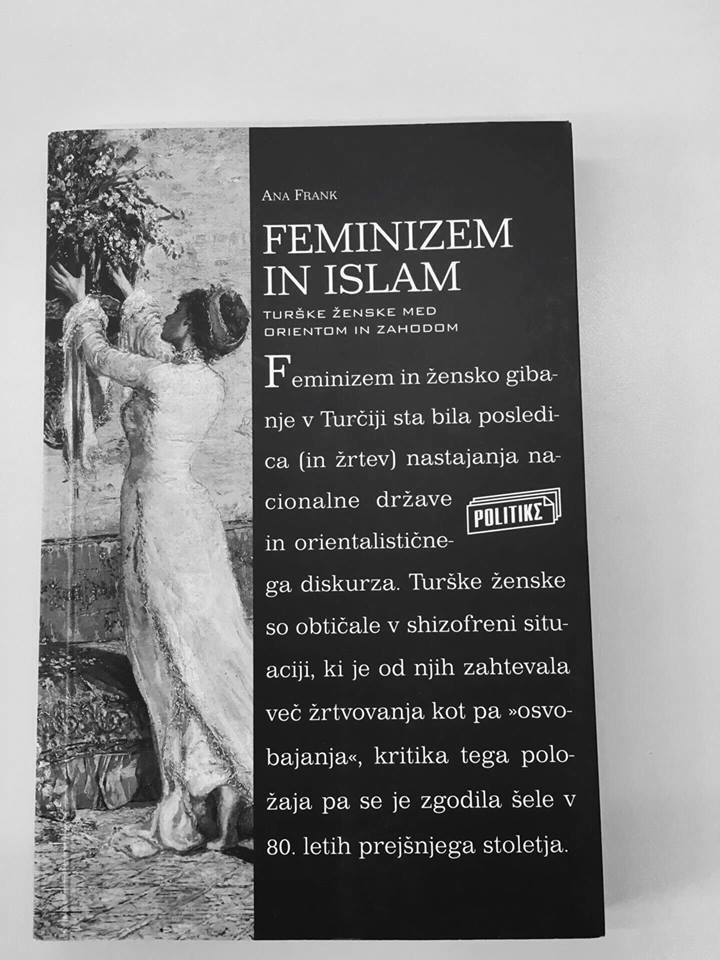

Islam je nastal na istem območju kot krščanstvo in judaizem, zato imajo te religije veliko skupnega. Islam goji prepričanja, da predstavlja nadgradnjo krščanstvu in judaizmu. Utemeljitelj islama je prerok Mohamed - za muslimane božji poslanec. Temelj vere je sveta knjiga Koran, ki vsebuje vse tisto, kar naj bi Alah razodel Mohamedu preko nadangela Gabriela (predstavlja Alahovo besedo). Njihov nauk temelji na petih stebrih. To so načela, ki vodijo zasebno življenje muslimanov v Sveto pismo si kristjani razlagajo v povezavi z izročilom, o katerem odločajo škofje, ki so v tesni povezavi s papežem.
